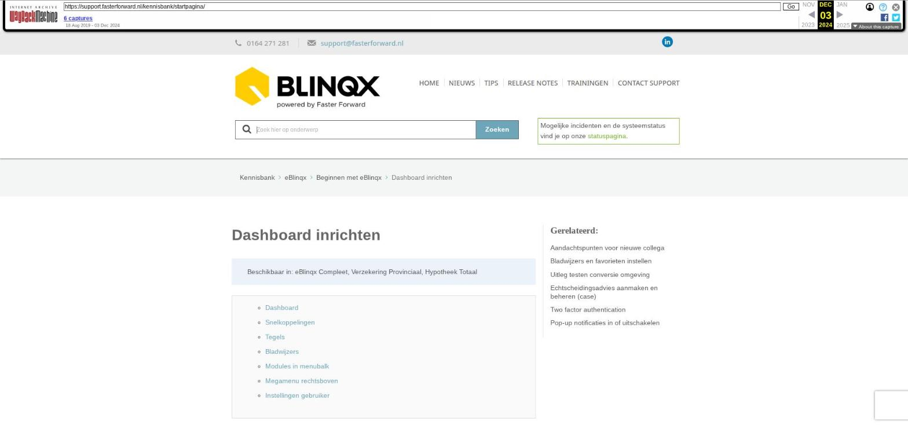

Dashboard inrichten
Beschikbaar in: eBlinqx Compleet, Verzekering Provinciaal, Hypotheek Totaal
- Dashboard
- Snelkoppelingen
- Tegels
- Bladwijzers
- Modules in menubalk
- Megamenu rechtsboven
- Instellingen gebruiker
- Dashboard
Het dashboard is de startpagina van je dag. Daarom is het belangrijk om deze in te richten naar jouw wensen.
Hieronder lees je meer over mogelijkheden, de symbolen en tegels op het dashboard. De snelkoppelingen en tegels zijn in te stellen via de knop 'Dashboard Instellingen'
Snelkoppelingen
De pictogrammen zijn snelkoppelingen. De snelkoppelingen zijn zelf in te stellen door onder 'Dashboard Instellingen' de gewenste snelkoppeling van links naar rechts te slepen. Aan de linkerzijde zie je de snelkoppelingen die niet zichtbaar zijn. De snelkoppelingen aan de rechterzijde zie je terug op je dashboard.
Tegels
Via de knop 'Dashboard instellingen' op je dashboard kun ook je de actieve tegels wijzigen. Als je een tegel op je dashboard wilt zien, sleep je deze van links naar rechts.
Ook is het mogelijk om een eigen tegel op het eBlinqx dashboard van je kantoor toe te voegen. Hierin kan je informatie tonen die je kantoor zelf beheert. Hiervoor dien je zelf een webpagina te maken waarin de informatie staat wat je in de tegel wilt weergeven. Vervolgens kun je de URL van de pagina insturen naar support@fasterforward.nl. Nadat deze ingesteld is, haalt eBlinqx de informatie van de desbetreffende pagina op.
Actuele rentestanden
De Nationale Hypotheekbond levert tegels met actuele hypotheekrentes.
- Top 10 hypotheekrentes NHG 20 jaar
- Top 10 hypotheekrentes 20 jaar
Let op! Deze gegevens worden gevuld door Hypotheekbond. Indien er afwijkingen zijn in de resultaten kun je met Hypotheekbond contact opnemen.
Bladwijzers
Een tegel die je zelf kan aanpassen, is de tegel met bladwijzers. Via de knop rechtsonder op de tegel kies je de gewenste bladwijzers.
In de 'Bladwijzers' pop-up kun je bladwijzers aanpassen (via het wijzigingsicoon), toevoegen (via het plusicoon) en verwijderen (via het rode kruisje).
Modules in menubalk
Bovenaan de pagina staan een aantal symbolen die je snel naar een module leiden.
Van links naar rechts worden de volgende symbolen getoond:
'Zoek in het menu' : typ hier jouw zoekopdracht in om sneller hetgeen te vinden waar je naar zoekt. Voorbeeld: je zoekt 'organisatie & personen' – type in de zoekbalk 'organisatie' – door op enter te drukken wordt 'organisatie & personen' gelijk geopend.
Dossiericoon: overzicht van de 10 laatst bezochte dossiers en zoeken naar dossiers. Klik hier voor meer uitleg over dossiers in eBlinqx.
E-mail: openen van de e-mailmodule.
Kalender/Agenda: openen van jouw agenda.
Takenoverzicht: overzicht van alle taken.
Urenregistratie: zichtbaar indien je gebruik maakt van personeelsdossiers en urensheets.
Rapportage manager: overzicht van alle bestaande rapportages in jouw eBlinqxomgeving.
Campagnemanager: hier kan je een mailing aanmaken om bijvoorbeeld een nieuwsbrief naar alle klanten te versturen.
Schademelding: overzicht en filter van de schademeldingen indien je gebruik maakt van de schademodule.
Track and Trace: overzicht van al jouw lopende producten
Vragensysteem: zichtbaar indien je gebruik maakt van een ticketbox bij een supportafdeling
Klembord: hier vind je alle zaken die je op het klembord geplaatst hebt
Notities: dit is jouw persoonlijke kladblok in eBlinqx. Hier kan je vanuit iedere pagina in eBlinqx bij.
Megamenu rechtsboven
Deze buttons vind je aan de rechterkant van het menubalk. Door met jouw muis op een van de woorden te gaan staan, krijg je een submenu met daarin alle functionaliteiten en beheerdersfuncties waar je rechten toe hebt.
Instellingen gebruiker
Helemaal rechts in de menubalk vind je een drop-down menu met gebruiker gerelateerde links. Bijvoorbeeld: "Mijn instellingen" en "Uitloggen". Daarnaast vind je daar een directe link naar de supportwebsite.
Afbeeldingen bij dit artikel


Schermafbeelding van de oorspronkelijke pagina

Bron: Wayback Machine-archief